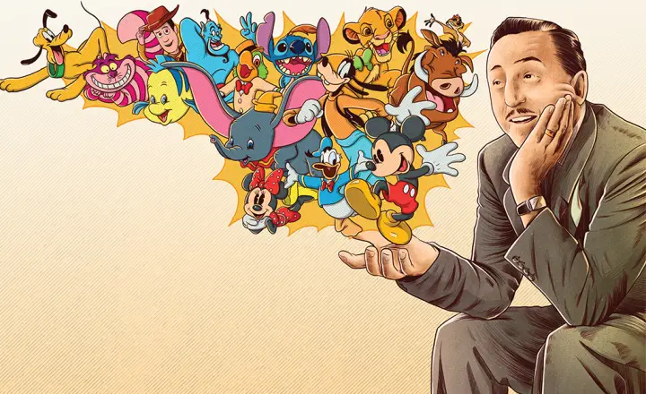
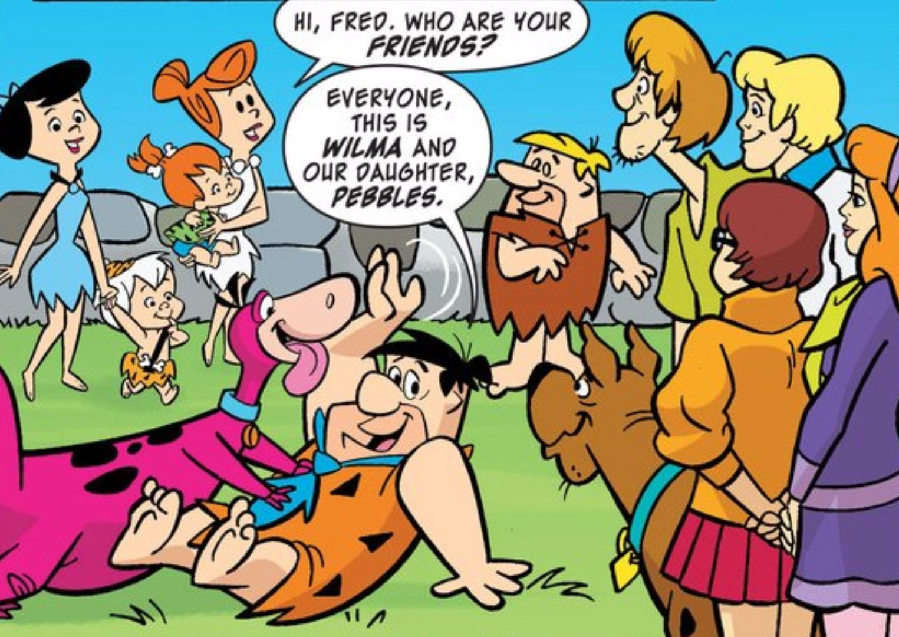
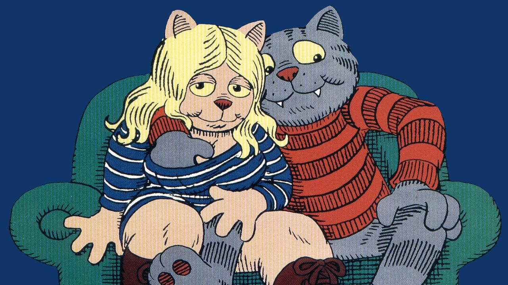
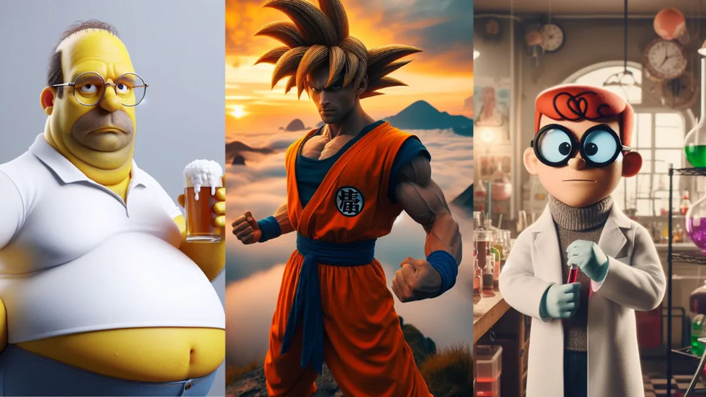

Eras da Animação
Era de Ouro (1930-1950)
A ascensão dos grandes estúdios como Disney e Warner Bros., definindo o formato de curtas e longas-metragens que conhecemos hoje.
Era da Televisão (1960-1980)
A animação se populariza na TV com produções de baixo custo e séries icônicas como "Os Flintstones" e "Scooby-Doo".
A Renascença (Anos 1990)
Um período de filmes aclamados pela crítica e público, como "A Pequena Sereia", "O Rei Leão" e "Aladdin".

Era Sombria (Anos 1970-1980)
Um período de experimentação e animações com temas mais adultos e sombrios, marcado por obras como "Fritz the Cat" e "Watership Down".
A Era Digital (Anos 2000-2010)
A consolidação do CGI, a ascensão da animação para streaming e a explosão de novos estilos visuais impulsionados pela tecnologia global.
A Era dos Animes Modernos (Anos 2010-Hoje)
Fenômenos como "Attack on Titan" e "Demon Slayer" explodem globalmente, impulsionados por plataformas de streaming que eliminam as barreiras de distribuição.